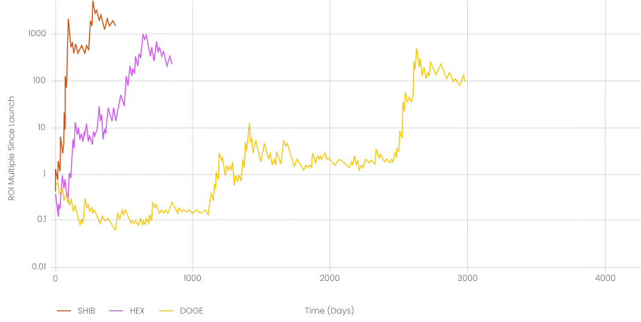
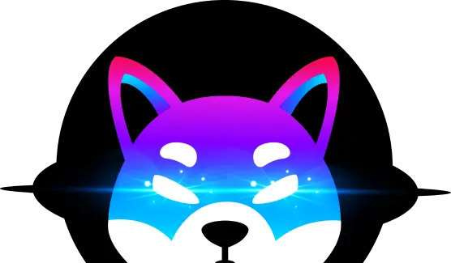

Superior Launch Model & Pumpamentals to Other Memecoins.
- Buy & Burn Applications
- Fair launch: no whale allocations
- Mint your own rewards: PINU tokens can only be minted by users
- High Coin Supply - Rank higher on Market Cap Websites
- Community built applications for trading, betting and more: Supply constantly bought off the market
A Pulsechain Exclusive
No multi chain confusion or dump potential or bridge risk
Pulse Inu is only available on Pulsechain
Well known store of value brand with the highest price appreciation of ANY
crypto, even Hex.
An Ecosystem of Projects
Shib was the first meme coin to go beyond speculation.
With a DEX, NFTs, Liquidity mining and incentive tokens.
The Pulse Inu community aims to follow the same path.
How does it work?
No sacrifice phase, no expectations. PINU launches as complete, community software.
PINU is either claimed or minted, that's it.
there are no founder allocations.
